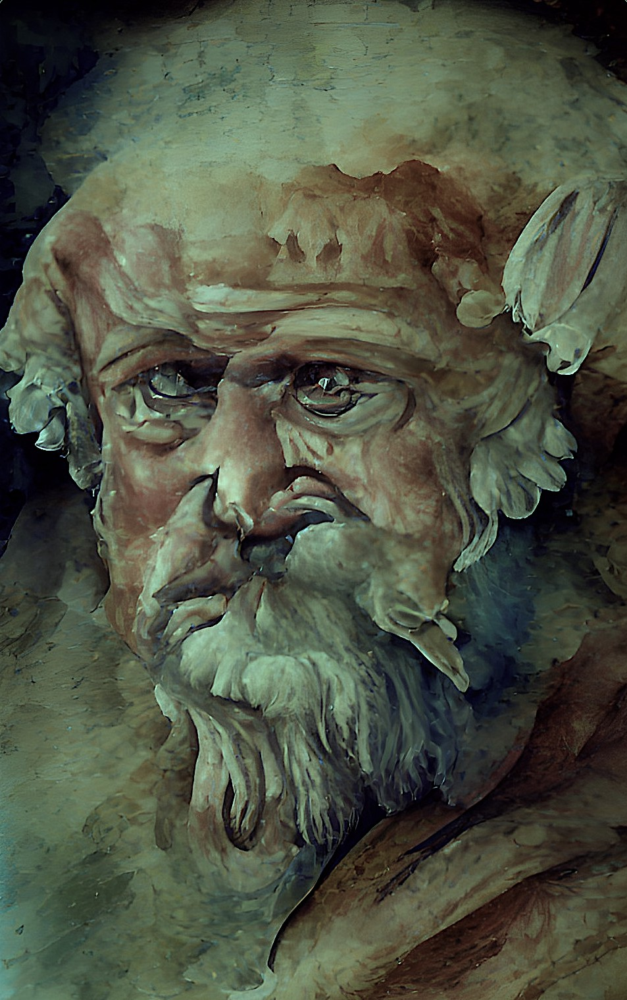
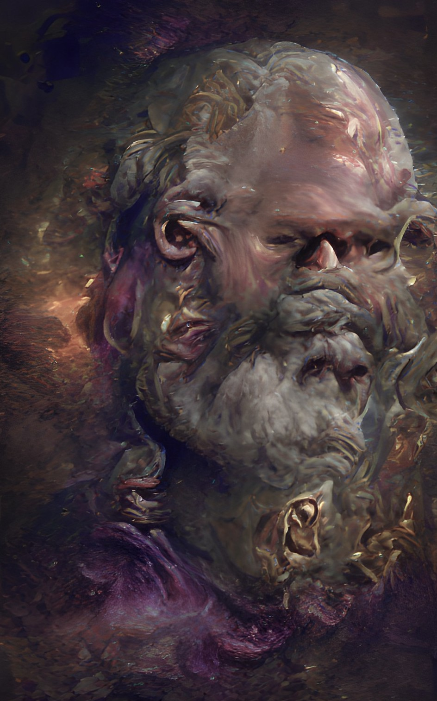
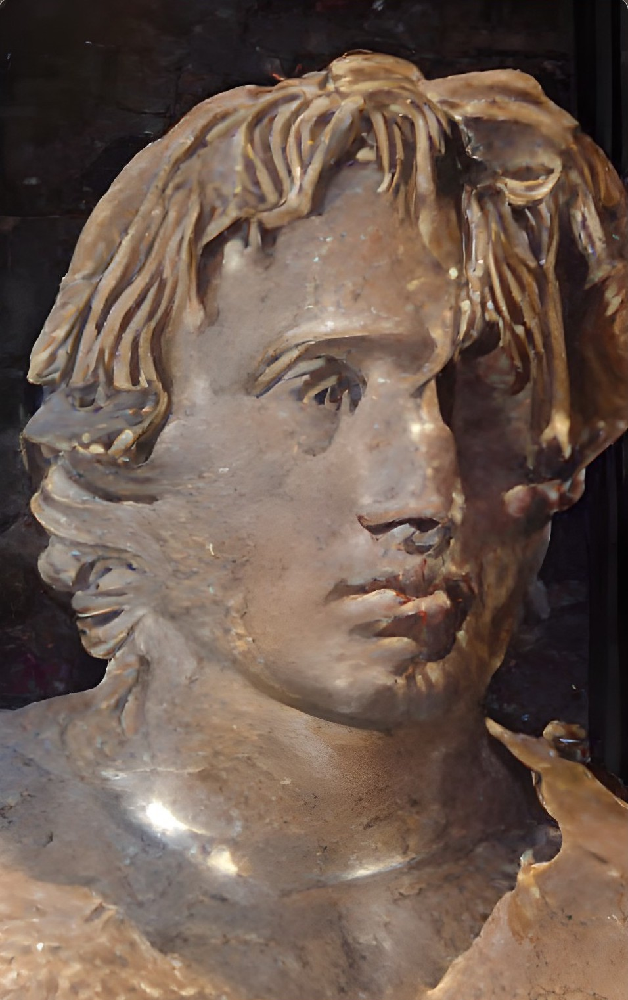
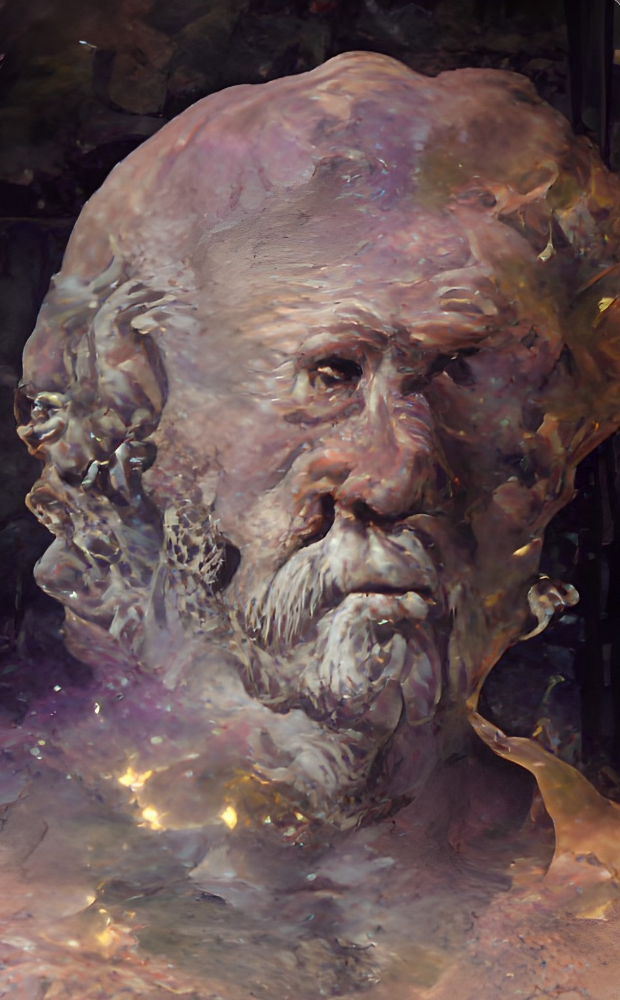
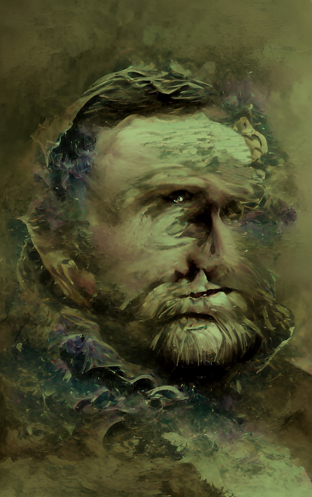
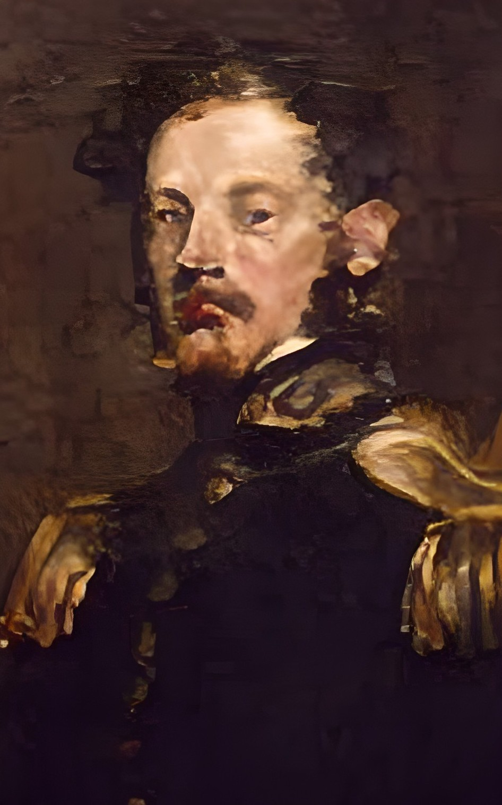
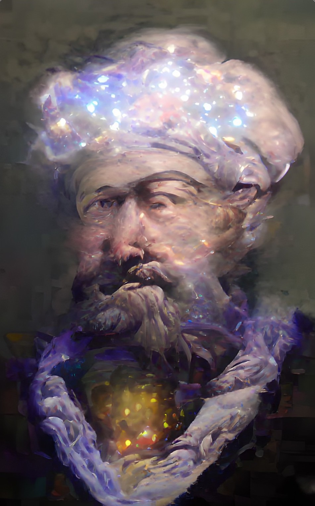
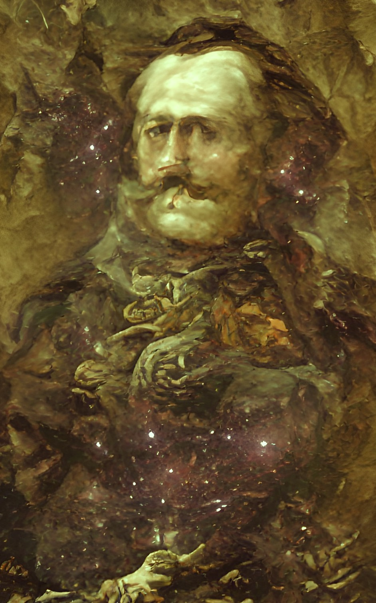

Farmer's Lady Friend
via (AI) Artificial Intelligence
07/21/2022
Click image to access (AI) Artificial Intelligence Ruralesque gallery

Rural Neighbors
via (AI) Artificial Intelligence
07/22/2022
Click image to access (AI) Artificial Intelligence Ruralesque gallery

Archimedes 
via (AI) Artificial Intelligence
07/23/2022
Click image to access (AI) Artificial Intelligence Historical Faces gallery
Socrates 
via (AI) Artificial Intelligence
07/24/2022
Click image to access (AI) Artificial Intelligence Historical Faces gallery
Alexander the Great 
via (AI) Artificial Intelligence
07/25/2022
Click image to access (AI) Artificial Intelligence Historical Faces gallery
Hippocrates 
via (AI) Artificial Intelligence
07/26/2022
Click image to access (AI) Artificial Intelligence Historical Faces gallery
Ulysses S. Grant 
via (AI) Artificial Intelligence
07/27/2022
Click image to access (AI) Artificial Intelligence Historical Faces gallery
Julius Caesar
via (AI) Artificial Intelligence
07/28/2022
Click image to access (AI) Artificial Intelligence Historical Faces gallery

Robert E. Lee 
via (AI) Artificial Intelligence
07/29/2022
Click image to access (AI) Artificial Intelligence Historical Faces gallery
Maimonides 
via (AI) Artificial Intelligence
07/30/2022
Click image to access (AI) Artificial Intelligence Historical Faces gallery
Casimir Pulaski 
via (AI) Artificial Intelligence
07/31/2022
Click image to access (AI) Artificial Intelligence Historical Faces gallery
BACK TO IMAGES OF THE DAY 39
NEXT